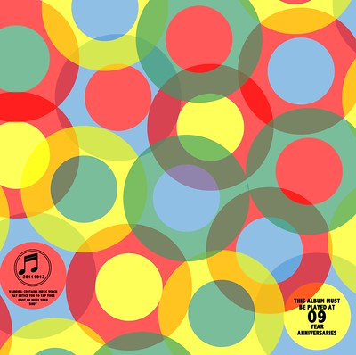
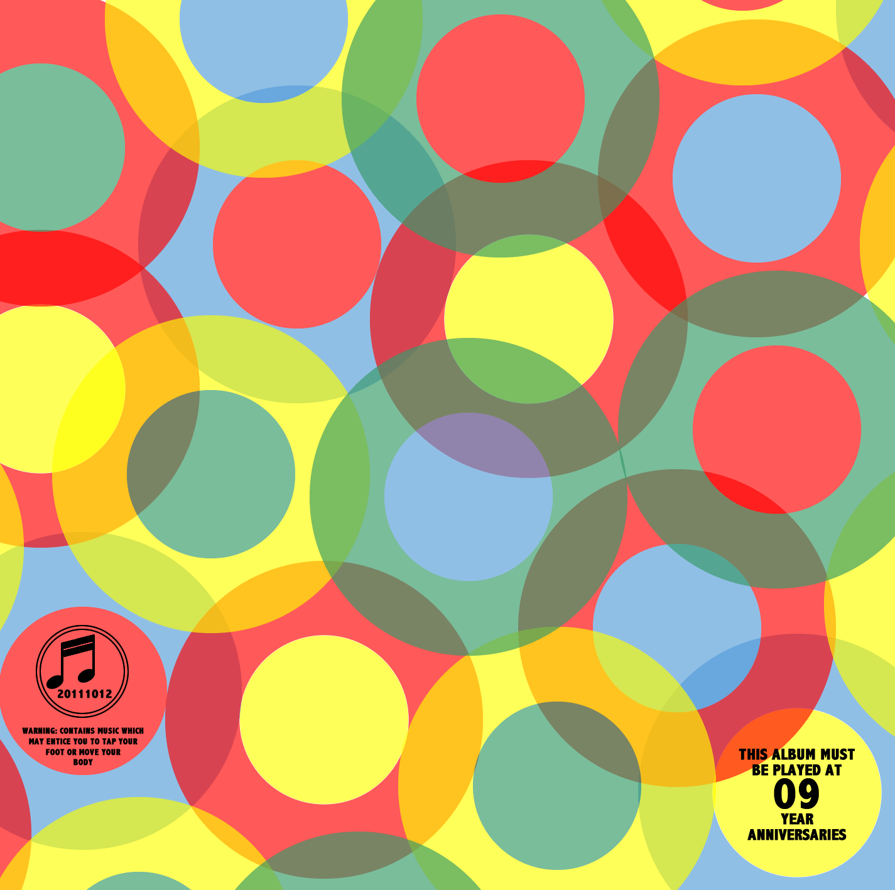
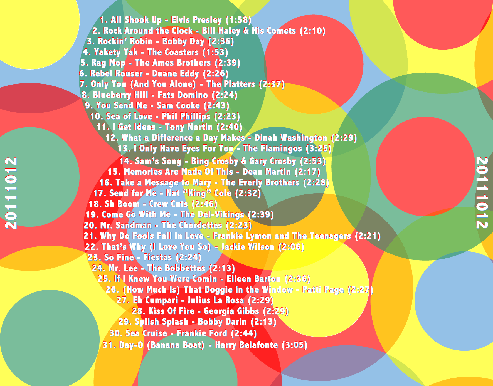

(G2) 20111012

I'm obviously really delayed in making this entry, but the following entry will show why I needed to finally make it. Much like some prior G2 mixes I made for Mary which were focused on a particular decade of music (60's, 70's, and 80's), this mix was focused on just the 1950's.
To get things started, here's the track listing (based on the Billboard Top 30-100 of each year):
| Track | Title | Artist | Duration |
|---|---|---|---|
| 01 | All Shook Up | Elvis Presley | 1:58 |
| 02 | Rock Around the Clock | Bill Haley & His Comets | 2:10 |
| 03 | Rockin' Robin | Bobby Day | 2:36 |
| 04 | Yakety Yak | The Coasters | 1:53 |
| 05 | Rag Mop | The Ames Brothers | 2:39 |
| 06 | Rebel Rouser | Duane Eddy | 2:26 |
| 07 | Only You (And You Alone) | The Platters | 2:37 |
| 08 | Blueberry Hill | Fats Domino | 2:24 |
| 09 | [You Send Me] | Sam Cooke | 2:43 |
| 10 | Sea of Love | Phil Phillips | 2:23 |
| 11 | I Get Ideas | Tony Martin | 2:40 |
| 12 | What a Difference a Day Makes | Dinah Washington | 2:29 |
| 13 | I Only Have Eyes For You | The Flamingos | 3:25 |
| 14 | Sam's Song | Bing Crosby & Gary Crosby | 2:53 |
| 15 | Memories Are Made Of This | Dean Martin | 2:17 |
| 16 | Take a Message to Mary | The Everly Brothers | 2:28 |
| 17 | Send for Me | Nat "King" Cole | 2:32 |
| 18 | Sh Boom | Crew Cuts | 2:46 |
| 19 | Come Go With Me | The Del-Vikings | 2:39 |
| 20 | [Mr. Sandman] | The Chordettes | 2:23 |
| 21 | Why Do Fools Fall In Love | Frankie Lymon and The Teenagers | 2:21 |
| 22 | That's Why (I Love You So) | Jackie Wilson | 2:06 |
| 23 | So Fine | Fiestas | 2:24 |
| 24 | Mr. Lee | The Bobbettes | 2:13 |
| 25 | If I Knew You Were Comin | Eileen Barton | 2:36 |
| 26 | (How Much Is) That Doggie in the Window | Patti Page | 2:27 |
| 27 | Eh Cumpari | Julius La Rosa | 2:29 |
| 28 | Kiss Of Fire | Georgia Gibbs | 2:29 |
| 29 | Splish Splash | Bobby Darin | 2:13 |
| 30 | Sea Cruise | Frankie Ford | 2:44 |
| 31 | Day-O (Banana Boat) | Harry Belafonte | 3:05 |

Because I made this now so long ago (let's just pretend that 10 months ago is a long time, okay?), I don't remember much about the design process of the artwork. Here are a few notes about it at this point:
- I know I wanted something that would feel like the 50's, and from my own notes, it was inspired by this Columbia record envelope.
- I wanted to make it feel like it was done in a multi-step printing, and the alignment was just slightly off between the different colors. I'm not super familiar with that process, so I'm sure I messed up... but I don't really care.
- I love that songs from this time period are so short, mainly because it means I could fit more songs on the mix (which still fits on an 80 minute CD (even though I don't really remember the last time I bought an actual CD)).
- Listening to all of the Billboard Top Hits of the 1950's was interesting in demonstrating how much of a game-changer Elvis was. Before him, everything felt like semi-sappy ballads, in the style of Frank Sinatra and Dean Martin. It was reminiscint of preparing for G2 20081225, with the 60's and The Beatles. My mother has never been a fan of Elvis, so I inherited a little disrespect for him. Nothing could have changed my opinion more than making this mix. Elvis, my hat is off to you (we'll just pretend he didn't steal the style from anybody else). Because of that overwhelming impression, I felt I needed to give him a place of honor at the beginning of the album. I'm particularly impressed with the "her lips are like a volcano when it's hot" part of the song, since he really fits "cano 'en it's" into a single beat... and actually freakin' works. Really, very impressive.
- Rag Mop is a song my father always butchered when I was growing up. When your hair was a mess, he'd throw down "R-A-G-G-M-O-P-P RAGMOP... RAGMOP!" on you.
- You Send Me - I love the simplicity of this song, and Sam Cooke's pure voice and lyrics (which can be said for What a Difference a Day Makes. I can't dedicate a song to Maria more than this one.
- Sea of Love - Phil Philips (not Phillip Phillips, mind you) - I love the base harmony line, so indicative of this time period (and the obvious intro of Why Do Fools Fall in Love, though you might think more of Mr. Sandman as the perfect symbol of 50's music).

I'm sure I could make comments on each and every song on the album, but I'll leave it now to you for your enjoyment. Maria, as always, I love you, and hope you enjoy(ed) this mix.
- Prior: 20110214
- Next: G2 20120807